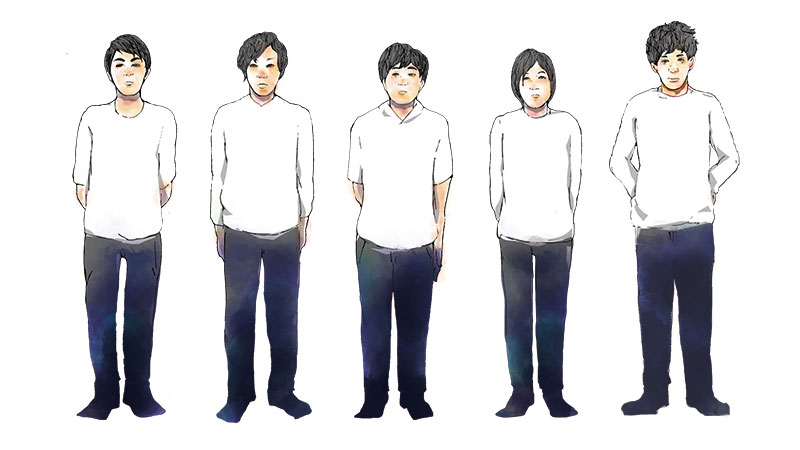

©2016 aimaimoco. All Rights Reserved.
ABOUT

2015年2月、
福岡の専門学校の同級生だったあうんとsho!がそれまで活動していたバンドを発展的に解散させ...
新たなﾘｽﾞﾑｾｸｼｮﾝ(RIKI&坂本Q太郎)と手を組み｢あいまいもこ｣を結成。あうんが中心となりｵﾘｼﾞﾅﾙ楽曲を少しづつ増やしていく。
2015年12月、
福岡Beat Stationにて初ﾗｲﾌﾞ。
2016年1月、
sho!が個人事情によりﾊﾞﾝﾄﾞを一時離れる。後任には弱冠19歳、専門学校の後輩いしむーが加入。
更にｵﾘｼﾞﾅﾙ楽曲を増やしていく。福岡市内のﾗｲﾌﾞﾊｳｽで地道に数本のﾗｲﾌﾞを実施、手応えを得る。
12月にはﾊﾞﾝﾄﾞ初音源として｢あいいろのはじまり｣(ﾚｲﾝｺ-ﾄ以下、3曲入り)を200枚限定で販売開始。
2017年2月、
sho!が復帰、ﾂｲﾝｷﾞﾀ-編成となり更に厚みのあるﾎﾟｯﾌﾟﾛｯｸﾊﾞﾝﾄﾞとしてﾚﾊﾟ-ﾄﾘ-増やしていく。
4月1日、
ﾊﾞﾝﾄﾞ初の海外公演として韓国/釜山でﾗｲﾌﾞ。ﾗｲﾌﾞ終了後のCD即売&ｻｲﾝ会では長蛇の列になる。
持参した50枚が完売！この時点でCD｢あいいろのはじまり｣200枚が完売！
February 2015
The Aimaimoko band was a Japanese band first formed in Fukuoka in February 2015. With members Nakaura, Aihara,
Syouzaki and Sakamoto. Before then Nakaura and Syouzaki who are the same grade students of music vocational school in Fukuoka
has once started activities and disbanded for the develop problem.
From then the Aimaimoko band gradually increases the original songs mainly created by Nakaura.
December 2015
First live show in ”Fukuoka Beast Station”.
January 2016
Syouzaki left the band temporary for the personal reason. Then a 19 years old junior of the music vocational school joined which makes the amount of original songs increased much more positively.
The Aimaimoko band carried out several live shows steadily in a live venue in Fukuoka and get a good reaction.
In December, the band started selling (limited to 3 songs, in addition to the「 RAINCOAT 」)
as the band's first sound source for only 200 sheets.
February 2017
Syouzaki returned to the band With two guitarist , the pop-rock band repertoire is increasing with much more thickness.
April 1st
The band held there fist overseas public performance of living show in Busan of Korea.
After the living show ,people get in line waiting for the album signing-selling meeting.
All the 50 copies brought there was sold out.At that time 200 copies of album
Now the band is busy in producing the new mini album which is excepted to be sold by summer of this year in Fukuoka.
Furthermore, the Aimaimoko is scheduled for several overseas performance. June 17th, 18th in Shanghai China.
August in Busan Korea. September in Xinjiang Urumqi and the second time in Shanghai China.
October the band will also perform for the event in Taipei.
At present, the Aimaimoko band has already kept nearly 20 original songs.
MEMBER
-
Vocal
あうん
02/04生。自他共に認めるマヨラー。好きな食べ物はカレイの味醂干しと梅干し。
-
Drum
RIKI
07/08生 A型。ドラム担当。中学生の時にドラムを始めロックやジャズなど様々な音楽に影響を受ける。
-
Guitar
Sho!
09/03生。中3でギターを始める。工業高校を卒業したが実は機械オンチ。2匹の愛犬への溺愛ぶりは見るに耐えない。
-
Guitar
坂本Q太郎
03/08生。好きな音楽は主にファンクやブラックミュージック。和食派。炊きたての白ご飯は至福。食後の甘味はかかせない。
-
Guitar
Yu
02/16生。好きな食べ物は刺身。嫌いな食べ物はエノキを除くキノコ類。趣味は人の趣味を楽しむこと。うがいと手洗いに関しては誰にも負けない自信あり。